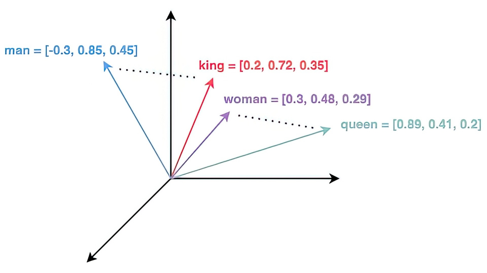
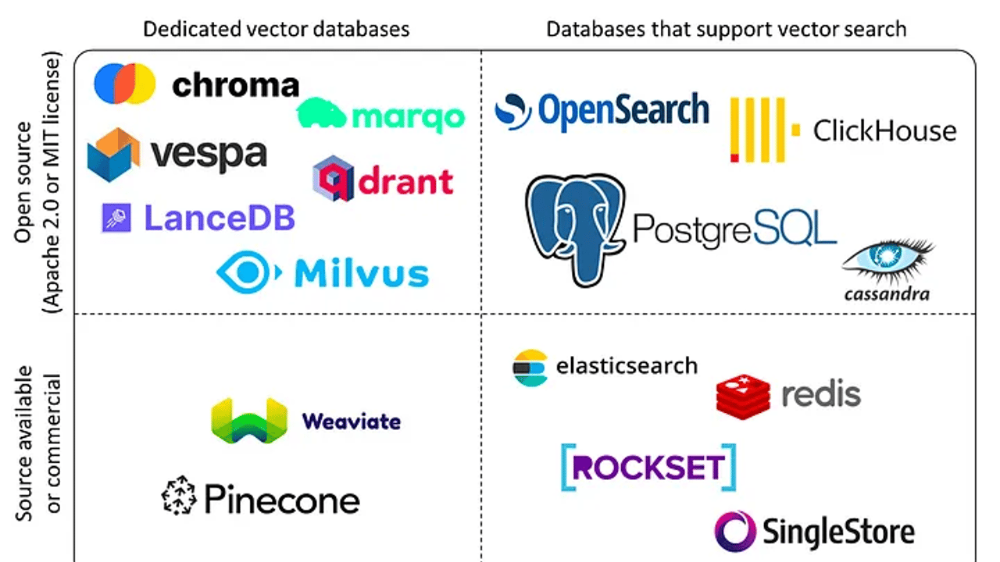
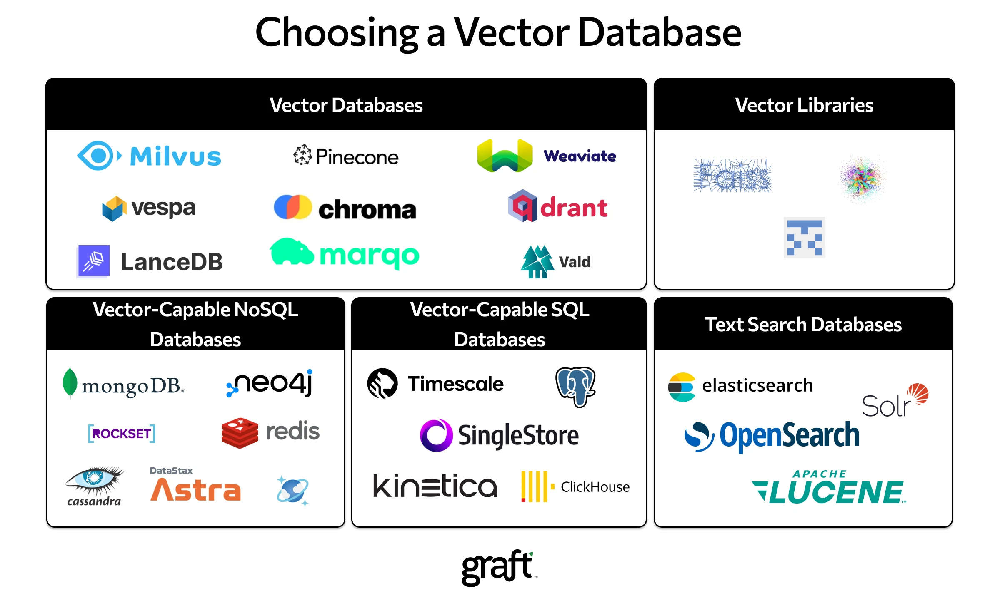
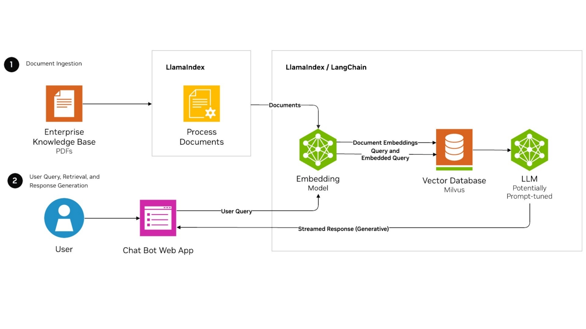

向量数据库
注意: 部分内容来自AI生成，可能存在错误，如有发现，欢迎指正！
1. 向量基础概念
1.1 什么是向量？
- 定义：向量是数学中表示大小和方向的量，在计算机科学中通常表现为有序的数字列表。
- 物理意义：可以表示速度、位移、力等有方向的量。
- 计算机中的表示：
[v₁, v₂, ..., vₙ]，例如[3, -2, 5]是一个三维向量。
1.2 向量的维度
- 二维向量：平面中的点，如
[2, 3]表示横坐标2，纵坐标3。 - 三维向量：空间中的点，如
[1, 4, -1]。 - 高维向量：机器学习中的特征向量，如
[0.2, -0.5, 0.7, ..., 0.1]（可能上千维）。
1.3. 向量的关键属性
- 长度（模）：向量的大小，如向量
[3, 4]的长度是√(3²+4²)=5。 - 方向：由各分量的比值决定，如
[1, 2]和[2, 4]方向相同。
2. 向量运算
2.1. 向量加减法
- 规则：对应分量相加减。
- 范例：
a = [1, 2, 3]
b = [4, 5, 6]
a + b = [1+4, 2+5, 3+6] = [5, 7, 9]
2.2. 标量乘法
- 规则：每个分量乘以标量。
- 范例：
a = [2, -1]
k = 3
k*a = [6, -3]
2.3. 点积（内积）
- 公式： $$\mathbf{a} \cdot \mathbf{b} = \sum_{i=1}^n a_i \cdot b_i = a_1b_1 + a_2b_2 + \dots + a_nb_n$$
- 几何意义：反映两个向量的方向相似性，常用于计算相似度（如余弦相似度）
- 范例：
import numpy as np
a = np.array([1, 2, 3]) # 三维向量
b = np.array([4, 5, 6]) # 三维向量
dot_product = np.dot(a, b)
print(dot_product) # 输出：1*4 + 2*5 + 3*6 = 32
2.4. 外积（Outer Product）
定义: 两个向量的外积生成一个矩阵，矩阵的第 (i) 行第 (j) 列元素是第一个向量的第 (i) 个分量与第二个向量的第 (j) 个分量的乘积。
公式： 如果 $$\mathbf{a}$$ 是 $$m$$ 维向量， $$\mathbf{b}$$ 是 $$n$$ 维向量，则外积结果为 $$m \times n$$ 的矩阵： $$\mathbf{a} \otimes \mathbf{b} = \begin{bmatrix} a_1b_1 & a_1b_2 & \dots & a_1b_n \ a_2b_1 & a_2b_2 & \dots & a_2b_n \ \vdots & \vdots & \ddots & \vdots \ a_mb_1 & a_mb_2 & \dots & a_mb_n \end{bmatrix}$$
条件: 无维度限制，任意两个向量均可计算外积。
示例:
import numpy as np
a = np.array([1, 2, 3]) # 三维向量
b = np.array([4, 5]) # 二维向量
outer_product = np.outer(a, b)
print(outer_product)
# 输出：
# [[ 4 5]
# [ 8 10]
# [12 15]]
- 外积应用场景:
- 矩阵生成：用于构造低秩矩阵（如特征分解）。
- 机器学习：某些特征交叉场景（如分解机模型）。
2.5. 逐元素乘法（Element-wise Multiplication）
定义: 两个向量的对应分量相乘，生成一个新的同维度向量。
公式：
$$\mathbf{a} \odot \mathbf{b} = [a_1b_1, a_2b_2, \dots, a_nb_n]$$条件: 两个向量必须维度相同。
示例:
import numpy as np
a = np.array([1, 2, 3])
b = np.array([4, 5, 6])
elementwise_product = a * b # 或 np.multiply(a, b)
print(elementwise_product) # 输出：[4, 10, 18]
- 逐元素乘法的应用
- 特征工程：构造交互特征。
- 激活函数：神经网络中的逐元素操作（如
ReLU、Sigmoid）。
2.6. 余弦相似度
- 公式：
cosθ = (a·b) / (|a||b|) - 意义：忽略向量长度，仅比较方向相似性（范围 [-1, 1]）。
- 范例：
import numpy as np
def cosine_similarity(a, b):
return np.dot(a, b) / (np.linalg.norm(a) * np.linalg.norm(b))
a = np.array([1, 2, 3])
b = np.array([4, 5, 6])
print(cosine_similarity(a, b)) # 输出 ≈ 0.974
- 应用：从海量向量中快速找到与目标最相似的向量。
- 图片搜索（以图搜图）
- 推荐系统（找到相似用户或商品）
 man、king、woman 和 queen 这几个词映射到的向量空间
3. 嵌入模型
嵌入模型（embedding model）是自然语言处理（NLP）领域的重要工具，其核心功能是将离散的文本数据（如单词、句子或段落）转化为连续的数值向量。这些向量通常是固定维度的，维度大小由模型设计决定，常为数百到数千维。这种向量化过程能够有效捕捉文本的语义和上下文信息，为下游任务（如文本分类、相似性比较、机器翻译）提供基础。
3.1 文本向量化的一般机制
嵌入模型的向量化过程通常包括以下步骤：
文本预处理：
- 对输入文本进行分词（如使用分词器如Jieba或BERT的WordPiece），并进行标准化（如去除停用词、小写化）。
- 对于中文文本，可能需要额外的分词处理，以确保准确性。
模型输入：
- 将预处理后的文本转化为模型可识别的格式。例如，BERT模型要求输入为token IDs，并添加特殊标记（如[CLS]表示句子开始，[SEP]表示句子结束）。
- 同时，模型可能需要位置编码和注意力掩码，以处理序列信息。
嵌入生成：
- 模型通过多层神经网络（如Transformer架构）处理输入，生成每个token的向量表示。
- 对于整段文本，通常取特定标记（如[CLS]）的输出作为句子的最终嵌入向量。
- 向量的维度由模型预定义，例如BERT-base输出768维向量，BERT-large输出1024维向量。
输出与应用：
- 最终输出为一个固定维度的向量，可用于后续任务，如计算余弦相似度、输入分类器或聚类算法。
3.2 范例：用BERT模型将句子转化为768维向量
输入文本："今天天气很好，适合户外运动！"
步骤1：文本预处理
- 清洗文本：移除特殊符号、标准化格式
- 处理结果：
今天天气很好适合户外运动
- 处理结果：
- 分词（Tokenization）：
- 使用BERT的WordPiece分词器切分文本：
- 分词结果：
["今天", "天气", "很", "好", "适合", "户外", "运动"]
步骤2：添加特殊标记
- 在句首添加
[CLS]标记（用于分类任务的特征提取） - 在句尾添加
[SEP]标记（句子分隔符）- 最终Token序列：
[CLS] 今天 天气 很 好 适合 户外 运动 [SEP]
- 最终Token序列：
步骤3：映射为数值ID
- 将每个Token转换为词汇表中的ID：
- 假设词汇表中：
[CLS]→ 101，[SEP]→ 102今天→ 2345，天气→ 1234，其他类推
- 结果：
[101, 2345, 1234, 3456, 5678, 6789, 7890, 8901, 102]
- 假设词汇表中：
步骤4：生成输入张量
- Token ID张量：
shape = [1, 7]（1个句子，7个Token） - 注意力掩码：
[1, 1, 1, ..., 1]（标记有效Token位置） - 段落类型ID：
[0, 0, 0, ..., 0]（单句任务全为0）
步骤5：BERT模型处理
- 嵌入层：
- 将Token ID转换为768维向量
- 加入位置编码（Positional Encoding）和段落编码
- Transformer编码器：
- 12层（BERT-base）自注意力机制处理
- 每层输出维度：
[1, 7, 768]（1个句子，7个Token，768维）
步骤6：提取句向量
- 池化策略：取
[CLS]标记对应的768维向量- 位置：第0个Token的输出
- 结果：
vector = [0.23, -0.56, 1.2, ..., 0.78]（768维浮点数）
步骤7：最终输出
# 代码示例（使用HuggingFace库）
from transformers import BertTokenizer, BertModel
text = "今天天气很好，适合户外运动！"
tokenizer = BertTokenizer.from_pretrained("bert-base-chinese")
model = BertModel.from_pretrained("bert-base-chinese")
# 步骤1-4：分词并生成输入
inputs = tokenizer(text, return_tensors="pt")
# 步骤5-6：模型推理并提取[CLS]向量
outputs = model(**inputs)
sentence_embedding = outputs.last_hidden_state[0, 0, :] # shape: [768]
3.3 技术细节与模型选择
- 模型类型：常见的嵌入模型包括Word2Vec、GloVe（基于词的嵌入）、BERT、RoBERTa、DistilBERT（基于上下文的嵌入）。
- 维度选择：维度通常为100到3072维，取决于模型复杂度。例如，Word2Vec可能输出100维，而BERT-base输出768维。
- 训练数据：嵌入模型通常在大型语料库（如Wikipedia、Common Crawl）上预训练，捕捉通用语义信息。
以下是不同嵌入模型的对比表：
| 模型名称 | 嵌入维度 | 上下文感知 | 训练数据规模 | 典型应用 |
|---|---|---|---|---|
| Word2Vec | 100-300 | 否 | 中等（数十亿词） | 词相似性、词聚类 |
| BERT-base | 768 | 是 | 超大（百亿词） | 句子分类、问答系统 |
| RoBERTa | 768-1024 | 是 | 超大（千亿词） | 文本生成、情感分析 |
3.4 embedding向量纬度
向量维度和文本切片长度之间存在间接关系：较大维度（如768）适合较长的切片（200-500个token），而较小维度（如384）适合较短的切片（100-200个token）。 建议用户根据具体任务实验调整切片长度，确保语义完整性和检索准确性。
| 向量维度 | 推荐token范围 | 约等同于词数范围 | 约等同于句子数范围 |
|---|---|---|---|
| 384 | 100-200 | 67-133 | 1-3 |
| 768 | 200-500 | 133-333 | 2-5 |
4. 向量索引
4.1. Flat索引（精确搜索）
- 特性
- 高精度：100% 准确率，返回真实最近邻。
- 速度慢：时间复杂度为 $O(N \times d)$（N 是向量数量，d 是维度）。
- 内存占用高：需存储所有原始向量（例如 100 万 128 维向量占约 500MB）。
- 原理
- 暴力搜索：直接计算查询向量与所有数据向量的距离（如欧氏距离、内积）。
- 无近似压缩：保留原始向量，不进行任何量化或降维。
4.2. IVF（倒排文件索引）
- 特性：
- 速度快于Flat：通过聚类缩小搜索范围，时间复杂度降至 $O(nprobe \times N/nlist \times d)$。
- 内存中等：需额外存储聚类中心（ $nlist \times d$ 个浮点数）。
- 精度较高：召回率依赖
nprobe参数（搜索的聚类数量）。
- 原理：
- 聚类：用k-means将向量空间划分为
nlist个聚类，每个聚类维护一个倒排列表。 - 搜索范围限制：仅搜索距离查询向量最近的
nprobe个聚类中的向量，避免全量扫描。
- 聚类：用k-means将向量空间划分为
4.3. PQ（Product Quantization，乘积量化）
- 特性
- 内存占用极低：向量被压缩为短编码（如 8-64 字节）。
- 查询速度快：通过查表加速距离计算。
- 精度有损：量化过程引入近似误差。
- 原理
- 向量分解：将 d 维向量切分为 m 个子向量（例如 128 维 → 8 个 16 维子向量）。
- 子空间量化：
- 对每个子空间独立聚类（如每子空间聚类为 256 类），生成码本（codebook）。
- 每个子向量用其聚类中心 ID（1 字节）表示。
- 编码存储：原始向量被压缩为 m 字节的编码（如 8 字节）。
- 距离计算：
- 预计算码本中所有聚类中心的距离表（lookup table）。
- 查询时，通过查表累加各子空间距离，复杂度从 $O(d)) 降为 (O(m)$。
4.4. IVF+Flat（倒排索引 + 原始向量）
- 特性
- 速度中等：比 Flat 快，但比 IVF+PQ 慢。
- 内存适中：存储原始向量，但通过聚类减少搜索范围。
- 精度较高：仅在局部聚类内做精确搜索。
- 原理
- 聚类（IVF）：
- 使用 k-means 将向量空间划分为
nlist个聚类。 - 每个聚类维护一个倒排列表，存储属于该聚类的原始向量。
- 使用 k-means 将向量空间划分为
- 搜索过程：
- 计算查询向量与所有聚类中心的距离，选择最近的
nprobe个聚类。 - 仅在这
nprobe个聚类的倒排列表内进行暴力搜索。
- 计算查询向量与所有聚类中心的距离，选择最近的
- 聚类（IVF）：
4.5. IVF+PQ（倒排索引 + 乘积量化）
- 特性
- 内存极低：向量被量化为短编码。
- 速度快：结合聚类和量化，双重加速。
- 精度中等：量化误差叠加聚类误差。
- 原理
- IVF层：同 IVF+Flat，将数据划分为
nlist个聚类。 - PQ层：对每个聚类内的向量进行乘积量化，生成压缩编码。
- 搜索过程：
- 定位到
nprobe个聚类。 - 对聚类内的量化编码进行查表距离计算。
- 定位到
- IVF层：同 IVF+Flat，将数据划分为
4.6. HNSW（分层可导航小世界图）
- 特性
- 速度极快：对数级时间复杂度 $O(\log N)$。
- 精度极高：接近暴力搜索的召回率。
- 内存高：需存储多层图结构和原始向量。
- 原理
- 分层图结构：
- 高层（稀疏）：快速定位大致区域。
- 底层（稠密）：细化搜索，找到最近邻。
- 搜索过程：
- 从高层开始，找到距离查询点最近的节点。
- 逐层向下，在更稠密的图中细化搜索路径。
- 边连接策略：
- 每个节点与“邻近”节点连接，保证图的可导航性（Small World 特性）。
- 分层图结构：
4.7. 索引结构总结
常见索引结构总结如下：
| 索引类型 | 速度 | 内存占用 | 精度 | 适用场景 | 说明 |
|---|---|---|---|---|---|
| Flat | 慢 | 高 | 100% | 小数据精确搜索（<10万级） | 暴力搜索：无压缩、无近似 → 高内存、高精度、低速度 |
| IVF | 中 | 中 | 高（依赖nprobe） | 百万级数据，高精度需求 | 通过聚类划分空间，减少搜索范围 → 速度提升，内存增加（存储聚类中心），精度依赖nprobe |
| PQ | 极快 | 极低 | 中 | 内存敏感，允许近似结果 | 量化压缩向量 → 内存大幅降低，距离计算查表化 → 速度极快，但引入量化误差。 |
| IVF+Flat | 中快 | 中 | 高 | 百万级数据，需精确距离计算 | 聚类缩小范围 + 原始向量计算 → 速度与内存平衡，精度保留 |
| IVF+PQ | 快 | 低 | 中高 | 十亿级数据，平衡速度与内存 | 聚类 + 量化 → 速度与内存双优化，精度损失可控 |
| HNSW | 极快 | 高 | 极高（近似精确） | 高精度、低延迟场景（如推荐系统） | 图结构分层导航 → 搜索路径短、精度高，但需存储复杂图结构 → 内存占用高 |
4.8. 向量索引查询对内存的要求
索引设计以内存计算为核心，所有索引类型均需将数据全量加载到内存中才能进行搜索，原因如下：
| 索引类型 | 原因 |
|---|---|
| Flat | 暴力搜索需遍历所有原始向量，直接计算距离，无法分片或延迟加载。 |
| IVF | 倒排列表中的向量数据需在内存中，聚类中心也需要实时访问以筛选候选聚类。 |
| PQ | 量化后的编码数据需全量在内存中，距离计算依赖预生成的码表和编码数据。 |
| IVF+Flat | 原始向量存储在倒排列表的聚类中，搜索时需遍历候选聚类的所有原始向量。 |
| IVF+PQ | 量化编码存储在倒排列表中，需全量加载以查表计算近似距离。 |
| HNSW | 图结构的节点和边需全部在内存中，否则分层导航和邻居跳转会因磁盘I/O延迟而失效。 |
以下方式缓解内存压力：
- 量化压缩（如 PQ、IVF+PQ）：通过降低单向量内存占用，使十亿级数据可在单机内存中存储。
- 分布式分片：将数据分布到多台机器，每台加载部分索引（需自定义分片逻辑）。
- 内存映射文件：使用
mmap将索引文件映射到虚拟内存，由操作系统按需加载（牺牲部分速度）。
5. 向量数据库
5.1. 什么是向量数据库？
- 专门存储、索引和查询高维向量的数据库，支持快速最近邻搜索（ANN, Approximate Nearest Neighbor）。
向量在向量数据库中的本质是一种索引类型！
5.2. 核心操作
- 写入：存储向量及其元数据（如
向量ID: 1001, 向量: [0.1, 0.5, ...], 标签: "猫的图片"）。 - 索引：构建高效数据结构（如树、图、哈希）加速搜索。
- 查询：输入目标向量，返回最相似的 Top-K 结果。
5.3 向量数据库选型
 
5.4. Milvus 向量数据库
Milvus 建立在流行的向量搜索库（包括 Faiss、HNSW、DiskANN、SCANN 等）之上，专为在包含数百万、数十亿甚至数万亿个向量的密集向量数据集上进行相似性搜索而设计。在继续之前，请熟悉嵌入检索的基本原则。
Milvus 还支持数据分片、流式数据摄取、动态 schema、搜索组合向量和标量数据、多向量和混合搜索、稀疏向量和许多其他高级功能。该平台按需提供性能，并且可以进行优化以适应任何嵌入检索场景。建议使用 Kubernetes 部署 Milvus，以实现最佳可用性和弹性。
Milvus 的计算节点采用共享存储架构，具有存算分离和水平扩展的特点。遵循数据面和控制面解耦的原则，Milvus 由接入层、协调器服务层、工作节点和存储层四层组成。在扩展或灾难恢复方面，这些层是相互独立的。

安装 milvus: https://milvus.io/docs/install_standalone-docker-compose.md
mkdir milvus
cd milvus
# Download the configuration file
wget https://github.com/milvus-io/milvus/releases/download/v2.5.5/milvus-standalone-docker-compose.yml -O docker-compose.yml
# Start Milvus
sudo docker-compose up -d
# Creating milvus-etcd ... done
# Creating milvus-minio ... done
# Creating milvus-standalone ... done
sudo docker-compose ps
# Name Command State Ports
# --------------------------------------------------------------------------------------------------------------------
# milvus-etcd etcd -advertise-client-url ... Up 2379/tcp, 2380/tcp
# milvus-minio /usr/bin/docker-entrypoint ... Up (healthy) 9000/tcp
# milvus-standalone /tini -- milvus run standalone Up 0.0.0.0:19530->19530/tcp, 0.0.0.0:9091->9091/tcp
# Stop Milvus
sudo docker compose down
# Delete service data
sudo rm -rf volumes
5.5 Milvus 向量数据库使用范例
from langchain_community.document_loaders import WebBaseLoader
from langchain.text_splitter import RecursiveCharacterTextSplitter
from sentence_transformers import SentenceTransformer
from pymilvus import connections, CollectionSchema, FieldSchema, DataType, Collection, utility
# 1. 读取多个网页文档内容
urls = [
"https://milvus.io/docs/glossary.md",
"https://milvus.io/docs/architecture_overview.md",
]
loader = WebBaseLoader(urls)
documents = loader.load()
# 2. 对文档进行分块，每块长度1024
text_splitter = RecursiveCharacterTextSplitter(chunk_size=1024, chunk_overlap=64)
split_docs = text_splitter.split_documents(documents)
# 3. 使用本地 text-embedding-v2 模型将分块转化为高维向量
# 查看SentenceTransformer支持的模型 https://huggingface.co/models?sort=likes&search=SentenceTransformer
# all-MiniLM-L6-v2 maps sentences & paragraphs to a 384 dimensional dense vector space and can be used for tasks like clustering or semantic search.
# model = SentenceTransformer('sentence-transformers/all-MiniLM-L6-v2')
# all-mpnet-base-v2 maps sentences & paragraphs to a 768 dimensional dense vector space and can be used for tasks like clustering or semantic search.
model = SentenceTransformer('sentence-transformers/all-mpnet-base-v2')
texts = [doc.page_content for doc in split_docs]
embeddings = model.encode(texts, convert_to_numpy=True)
# 4. 连接 Milvus 并创建 collection
connections.connect(host='localhost', port='19530')
# Dimension of the vector
dimensions = 768
# 定义字段 schema
fields = [
FieldSchema(name="id", dtype=DataType.INT64, is_primary=True, auto_id=True),
FieldSchema(name="embedding", dtype=DataType.FLOAT_VECTOR, dim=dimensions),
FieldSchema(name="text", dtype=DataType.VARCHAR, max_length=65535)
]
# 创建 collection schema
schema = CollectionSchema(fields=fields, description="documents collection")
# 创建 collection
collection_name = "rag_docs"
if utility.has_collection(collection_name):
utility.drop_collection(collection_name)
collection = Collection(name=collection_name, schema=schema)
# 5. 将向量和文档内容存入 collection
data = [
embeddings.tolist(), # 向量
texts # 原始文本
]
collection.insert(data)
# 6. 创建索引
index_params = {
"metric_type": "L2",
"index_type": "IVF_FLAT",
"params": {"nlist": 1024}
}
collection.create_index(field_name="embedding", index_params=index_params)
# 加载 collection 到内存
# load() 会将这些索引结构加载到内存。原始文本（或其他标量字段，如 text）通常是按需加载的，不会全部预加载到内存中。
# 这意味着内存使用主要由向量索引的大小决定，而不是文本数据的大小。
collection.load()
# 7. 执行查询
query_text = "example query text"
query_embedding = model.encode([query_text], convert_to_numpy=True).tolist()[0]
search_params = {"metric_type": "L2", "params": {"nprobe": 10}}
results = collection.search(
data=[query_embedding],
anns_field="embedding",
param=search_params,
limit=5,
output_fields=["text"]
)
# 8. 输出查询结果
for result in results:
for hit in result:
print(f"Distance: {hit.distance}")
print(f"Text: {hit.entity.get('text')[:200]}...") # 只显示前200字符
print("-" * 50)
# 9. 断开 Milvus 连接
connections.disconnect("default")
6. 向量数据库应用场景
6.1 检索增强生成 (RAG)
检索增强生成 （RAG） 是一种旨在优化大型语言模型 （）LLMs 输出的架构。 通过使用向量搜索，RAG 应用程序可以将向量嵌入存储在数据库中，并在LLM生成响应时检索相关文档作为附加上下文，从而提高答案的质量和相关性。

以上是检索增强生成 (RAG) 的经典模式，将个人/企业的知识库向量化存入向量数据库后，在和大模型沟通时，先查询向量数据库获得相关的知识库资料， 补充到提示词中一起提交给大模型，可以得到更个性化更准确的答案。
user_question = "这些文档讨论的主要技术是什么？"
# 提取向量数据库查询 top-k 结果
# contexts = [hit.entity.get('text') for hit in results[0]]
contexts = []
for result in results:
for hit in result:
contexts.append(hit.entity.get('text'))
"""构建RAG提示模板"""
context_str = "\n\n".join([f"[Context {i+1}]: {ctx}" for i, ctx in enumerate(contexts)])
prompt = f"""请基于以下上下文信息回答问题。如果上下文不包含答案或信息不足，请直接回答你不知道。
{context_str}
[问题]: {user_question}
请用中文给出清晰、简洁的回答，并确保回答完全基于提供的上下文。"""
print(prompt)
deep_api_key = "your api key"
response = requests.post(
"https://api.deepseek.com/v1/chat/completions",
headers={
"Authorization": f"Bearer {deep_api_key}",
"Content-Type": "application/json"
},
json={
"model": "deepseek-chat",
"messages": [
{"role": "system", "content": "你是一个专业的AI助手，能够准确根据提供的信息回答问题"},
{"role": "user", "content": prompt}
],
"temperature": 0.3,
"max_tokens": 8192
},
timeout=30
)
print(response.json()["choices"][0]["message"]["content"])
6.2. 语义搜索(Semantic search)
语义搜索是一种搜索技术，它根据查询的含义返回结果，而不是简单地匹配关键字。 它使用嵌入来解释不同语言和各种类型数据（例如文本、图像和音频）的含义。 然后，向量搜索算法使用这些嵌入来查找满足用户查询的最相关数据。
6.3. 推荐引擎(Recommendation engine)
推荐引擎是一个系统，可主动推荐与用户相关且个性化的内容、产品或服务。 它通过创建表示用户行为和偏好的嵌入来实现这一点。 这些嵌入可帮助系统识别其他用户已与之互动或表现出兴趣的类似项目。 这增加了推荐对用户既相关又有吸引力的可能性。
Reference
- 什么是向量数据库, https://www.nvidia.cn/glossary/vector-database/
- 向量数据库：AI时代的机遇与挑战, https://zhuanlan.zhihu.com/p/18822987637